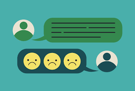
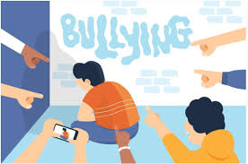

Lesson 3: Why Do People Cyberbully?
Cyberbullies act for various reasons, such as:
-
Anonymity: The internet allows people to hide behind fake profiles or remain anonymous, making them feel invincible and free from consequences.

-
Boredom: Some individuals bully online simply for entertainment or because they find it fun.
-
Revenge: People who have been bullied may seek to hurt others in return.
 -
Peer pressure: Sometimes people engage in cyberbullying to fit in with a certain group or gain popularity.
 -
Miscommunication: Tone and intent can be misunderstood online, making someone’s comment seem harsher than intended.